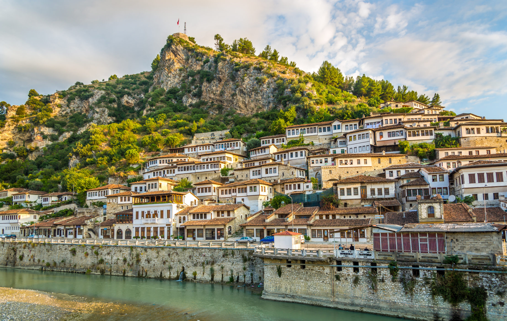

The world of Albania
2025-2026 .
Introduction to Albania

Albania is a small country in Southeast Europe, located on the western Balkan Peninsula. It has a rich history, beautiful coastline along the Adriatic and Ionian Seas. Albania blends traditional and modern influences, with Tirana as its lively capital.